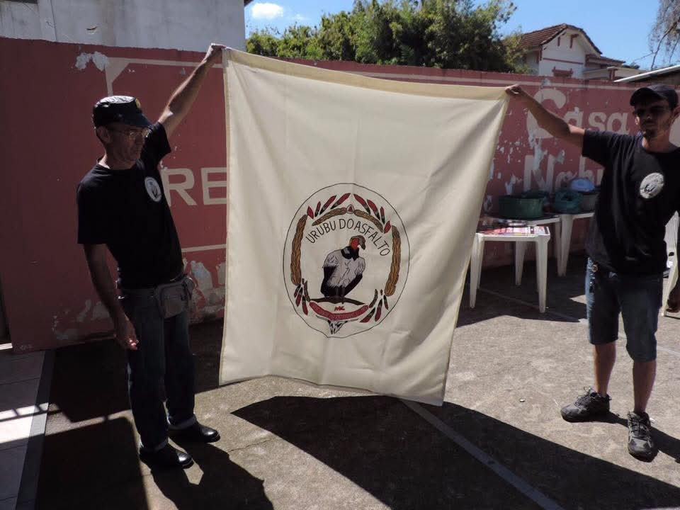
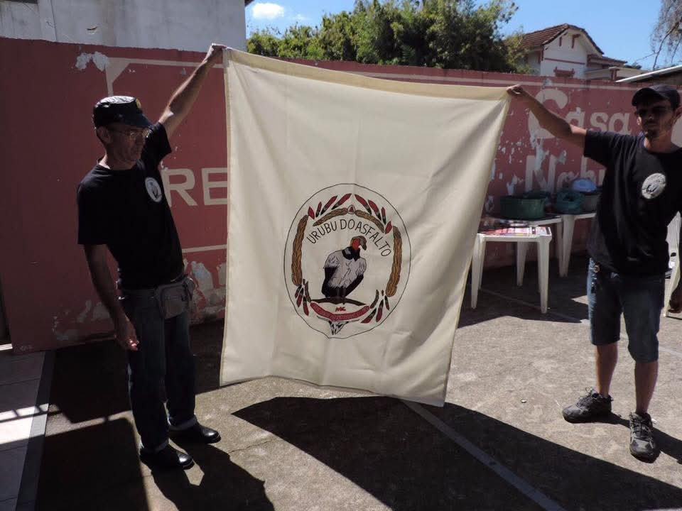
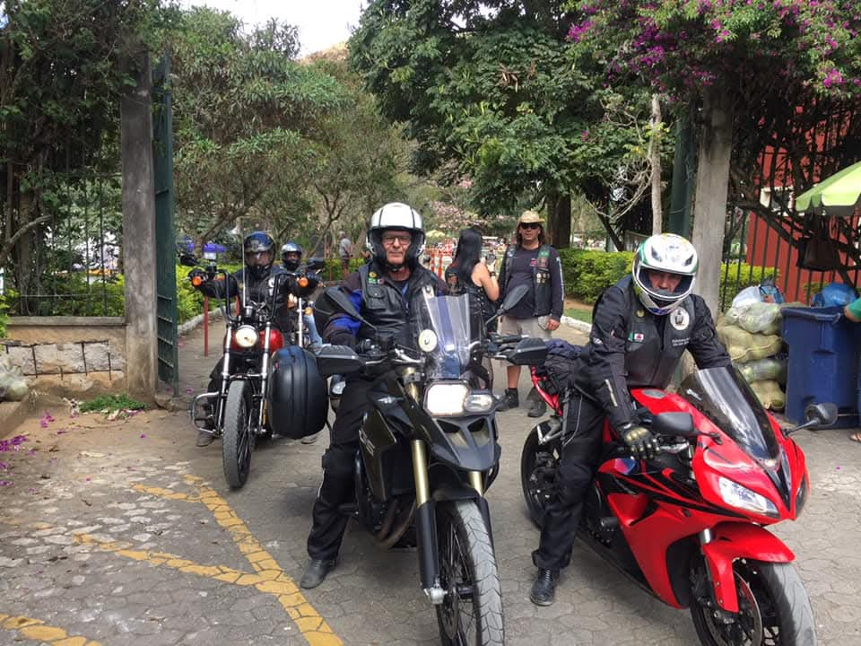
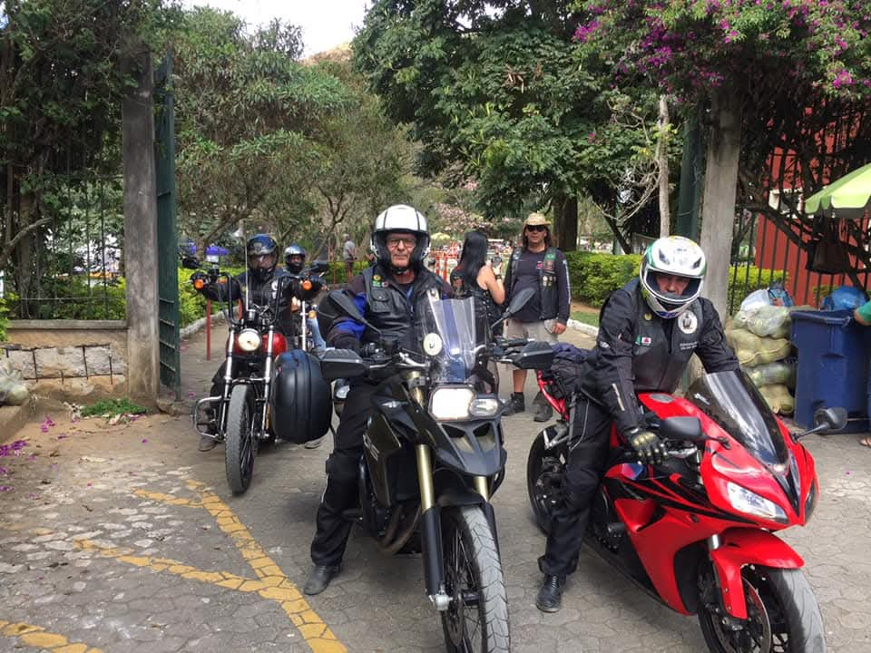
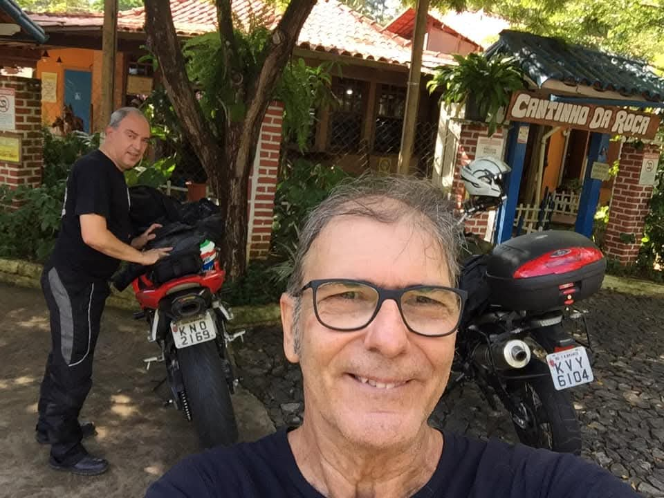
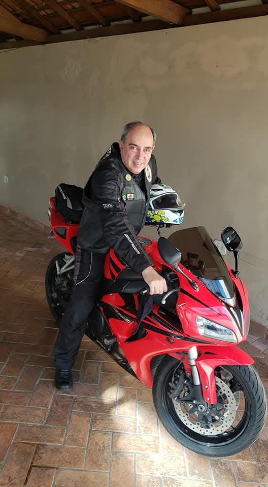
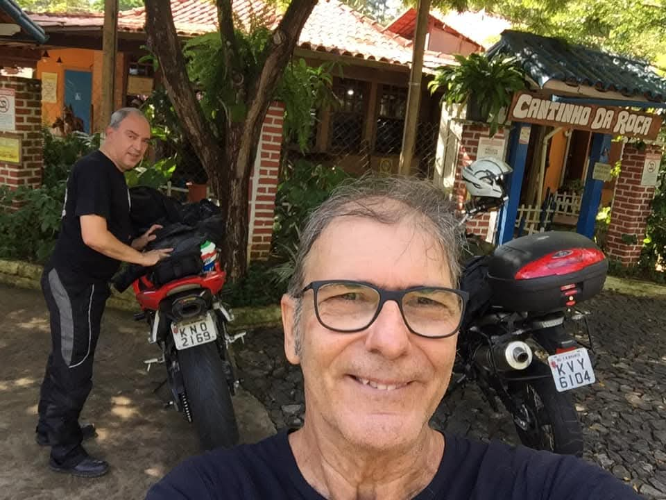
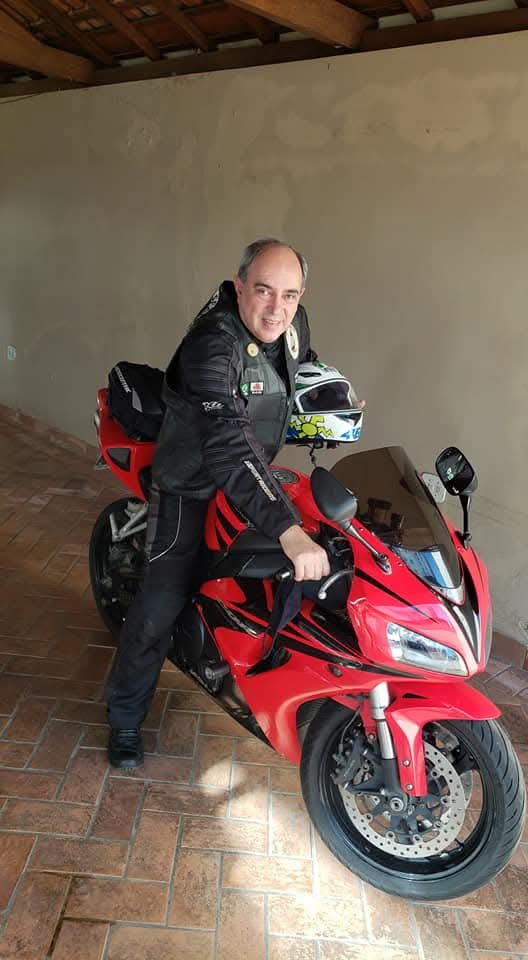
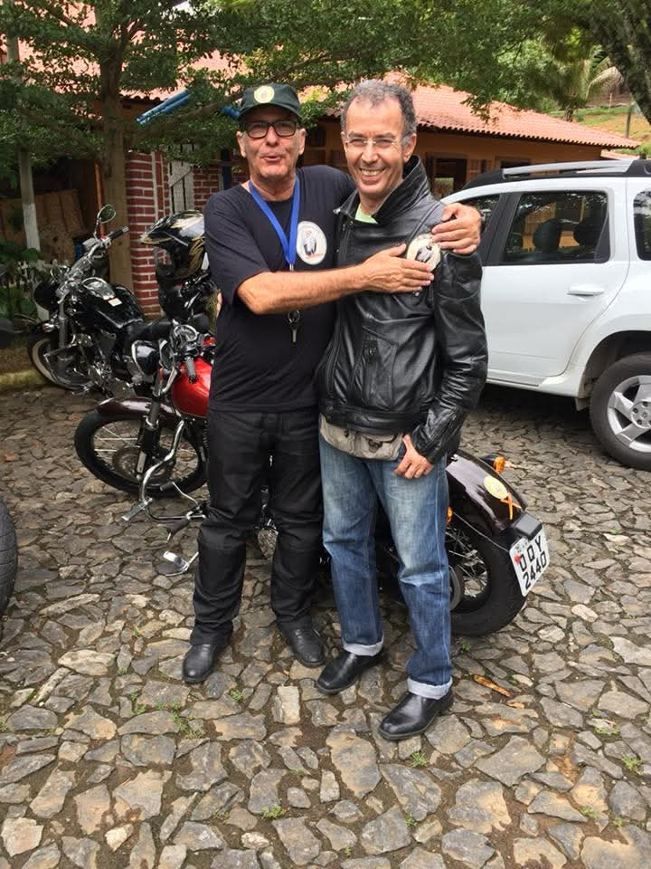
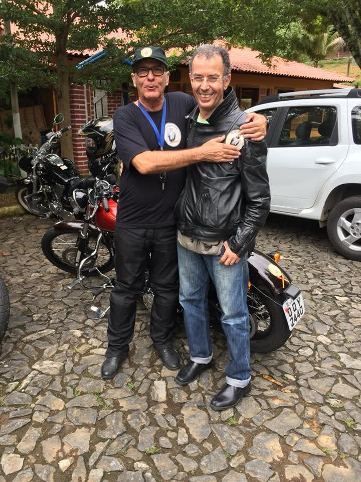

***SITE EM CONSTRUÇÃO***
O Moto Clube Urubu do Asfalto foi fundado em 28 de setembro de 1998, na cidade de Visconde do Rio Branco – MG, sendo reconhecido como o primeiro moto clube da região.
Surgiu da união de motociclistas apaixonados pela estrada, que se reuniram com o objetivo de preservar a cultura motociclÃstica, promover a amizade, a solidariedade e o espÃrito de liberdade sobre duas rodas.
Sua sede inicial foi estabelecida provisoriamente na Rua Dr. Theophilo Dubaigh, nº 346, no centro da cidade. Desde então, o MC Urubu do Asfalto vem marcando presença em encontros, eventos e viagens, sempre cultivando a irmandade e o respeito entre motociclistas.
Com quase três décadas de história, o clube mantém viva sua essência: a união de pessoas que compartilham a paixão pelo motociclismo e a estrada, levando o nome de Visconde do Rio Branco para diversas regiões do paÃs. 🚀

 

 


 



 
